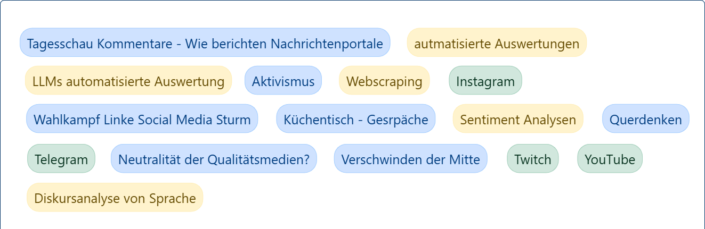

Organisatorisches für das Semester
Herzlich willkommen zur ersten Sitzung! Bevor wir inhaltlich starten, klären wir die wichtigsten organisatorischen Punkte für das Seminar.
Prüfungsleistung
Die Modulnote setzt sich aus zwei Teilleistungen zusammen:
- 75% Hausarbeit: Eine wissenschaftliche Arbeit, in der Sie ein selbstgewähltes Thema aus dem Bereich der politischen Online-Kommunikation theoretisch fundiert und empirisch bearbeiten.
- 25% Präsentation: Vorstellung Ihres Hausarbeitsprojekts (Thema, Fragestellung, Methode, zentrale Ergebnisse/Erkenntnisse) am Ende des Semesters.
Gruppenarbeit (Hausarbeit & Präsentation)
Die Prüfungsleistungen können optional auch in Gruppen erbracht werden. Hier einige Vor- und Nachteile:
Vorteile der Gruppenarbeit:
- Ermöglicht potenziell komplexere Forschungsdesigns.
- Verarbeitung größerer Datenmengen wird machbar.
- Simuliert wissenschaftliche Kollaboration (Praxisnähe).
- Möglichkeit zur Spezialisierung innerhalb des Projekts.
- Gegenseitiges Feedback und Unterstützung im Prozess.
Nachteile/Herausforderungen der Gruppenarbeit:
- Die Benotung erfolgt grundsätzlich für die Gruppe als Ganzes*.
- Man kann nicht jeden einzelnen Schritt des Forschungsprozesses selbst durchführen.
- Erfordert gute Absprachen und Koordination.
- Potenziell weniger individueller Handlungsspielraum bei Themenwahl/Umsetzung.
*Nur bei nachgewiesener NICHT-Beteiligung kann im Einzelfall eine differenzierte Benotung erfolgen, dies ist jedoch die Ausnahme.
Details zur Präsentation
- Zeitpunkt: Findet geblockt am Ende des Semesters statt (genaue Termine folgen).
- Dauer: Ca. 20 Minuten pro Projekt/Person (bei Gruppen etwas länger, Einzelpersonen kürzer).
- Format: Vorstellung des Projekts im Kolloquiums-Stil (kurzer Input, dann Diskussion/Fragen).
- Bewertungsfokus: Liegt klar auf der wissenschaftlichen Stringenz (Problemstellung, theoretische Fundierung, methodisches Vorgehen, Argumentation, Ergebnisse) und weniger auf rhetorischer Perfektion (freie Rede ist aber natürlich willkommen!).
- Gruppen: Bei Gruppenarbeiten präsentieren alle Mitglieder gemeinsam und erhalten dieselbe Note für die Präsentation*.
Details zur Hausarbeit
- Umfang: Richtwert ca. 45.000 – 55.000 Zeichen (inkl. Leerzeichen, Fußnoten, Verzeichnisse - ohne Anhang).
- Inhalt: Theoretische Fundierung, klare Forschungsfrage, adäquate Forschungsmethode(n), (Online-)Datenerhebung (falls empirisch), Analyse der Daten, Diskussion der Ergebnisse im Licht der Theorie und Forschungsliteratur.
- Gruppenarbeit: Bei Gruppen erhöht sich der Richtwert für den Umfang um ca. + 7.000 Zeichen pro Person da ein tiefergehenderes oder umfangreicheres Projekt erwartet wird.
- Abgabefrist: Voraussichtlich 01.09.2025 (genaues Datum wird noch bestätigt).
Generell gilt: Bei Fragen zur Organisation, Themenfindung oder konkreten Projekten – sprechen Sie mich an oder schreiben Sie mir gerne eine E-Mail: andreas.reich@uni-hohenheim.de
Thema: Politische Online-Kommunikation – Eine Einführung
Nachdem die organisatorischen Rahmenbedingungen geklärt sind, widmen wir uns dem Kern des Seminars: Der politischen Online-Kommunikation. Was verstehen wir darunter und warum ist sie so relevant?
Politische Online-Kommunikation umfasst alle Formen der Kommunikation über politische Inhalte, Akteure, Prozesse und Ereignisse, die über digitale Kanäle und Plattformen stattfinden. Dies schließt sowohl die Kommunikation etablierter politischer Akteure (Parteien, Regierungen, Politikern), der Medien als auch von Bürgern, Interessengruppen und sozialen Bewegungen ein.
1. Vielfalt der Kanäle und Medienformen
Die Landschaft der politischen Online-Kommunikation ist äußerst vielfältig. Wichtige Kanäle und Formate sind unter anderem:
- Nachrichten-Websites & Online-Journalismus: Klassische Medienhäuser mit ihren Online-Auftritten, aber auch reine Online-Nachrichtenportale und Blogs.
- Websites politischer Akteure: Offizielle Seiten von Parteien, Parlamenten, Regierungen, Ministerien, NGOs.
- Soziale Medien: Plattformen wie Twitter/X, Facebook, Instagram, TikTok, LinkedIn, Mastodon etc. zur Verbreitung von Botschaften, zur Interaktion und Mobilisierung.
- Messenger-Dienste: WhatsApp, Telegram, Signal etc. für direktere (Gruppen-)Kommunikation und Mobilisierung.
- Video- und Audio-Plattformen: YouTube, Vimeo sowie Podcast-Plattformen wie Spotify für die Verbreitung audiovisueller politischer Inhalte.
- Kollaborative Plattformen: Wikis, Foren oder spezialisierte E-Partizipationsplattformen.
- Newsletter & E-Mail-Marketing: Direkte Kommunikation mit Unterstützern und Interessierten.
Die Wahl des Kanals hängt stark vom Kommunikationsziel, der Zielgruppe und den verfügbaren Ressourcen ab.
2. Zentrale Anwendungsfelder der politischen Online-Kommunikation
Digitale Medien haben die Art und Weise, wie Politik kommuniziert und erfahren wird, grundlegend verändert. Einige zentrale Anwendungsfelder sind:
-
Politische Meinungsbildung und Information:
- Bereitstellung und Abruf politischer Inhalte (Programme, Positionen, Gesetzesvorhaben) über Webseiten, Social Media etc.
- Informationsvermittlung durch Politikern, Parteien, Medien, NGOs und andere Akteure.
- Hintergrundberichte, Faktenchecks und Analysen durch Online-Journalismus.
-
Wahlkampf und Mobilisierung:
- Führung digitaler Wahlkampagnen, oft mit Microtargeting über Social Media Ads.
- Einrichtung von Online-Wahlkampfzentralen, Organisation von digitalen Events.
- Online-Fundraising und Spendenkampagnen.
- Mobilisierung von Wählern und Unterstützern (z.B. durch personalisierte Ansprache, Hashtag-Kampagnen, Aufrufe zur Wahlbeteiligung).
-
Bürgerbeteiligung und E-Partizipation:
- Möglichkeit zur Teilnahme an Online-Petitionen und -Abstimmungen (z.B. OpenPetition, Change.org).
- Durchführung von Bürgerdialogen, Online-Konsultationen zu politischen Vorhaben auf spezialisierten Plattformen (z.B. Consul, LiquidFeedback).
- Formelle Beteiligung an Gesetzgebungsprozessen durch Online-Stellungnahmen.
-
Politische Meinungsäußerung und Debatte:
- Öffentliche Diskussionen über politische Themen auf Social-Media-Plattformen (Twitter/X, Facebook, Reddit etc.).
- Veröffentlichung von Meinungen und Analysen durch Bürgern über Blogs, Vlogs, Podcasts.
- Austausch und Auseinandersetzung in Kommentarspalten und Online-Foren (oftmals auch Quelle von Polarisierung und Desinformation).
-
Protest und Aktivismus:
- Organisation und Koordination von (Offline-)Protesten über soziale Medien und Messenger (z.B. Fridays for Future, #BlackLivesMatter).
- Durchführung rein digitaler Kampagnen und Protestformen (z.B. gegen Netzpolitik-Entscheidungen wie Artikel 13/17).
- "Clicktivism" und "Hashtag-Aktivismus": Niederschwellige Formen der Beteiligung durch Likes, Shares, Nutzung von Kampagnen-Hashtags.
Forschungsmethoden in der Politischen Online-Kommunikation
Um die vielfältigen Phänomene der politischen Online-Kommunikation wissenschaftlich zu untersuchen, kommt ein breites Spektrum an Forschungsmethoden zum Einsatz. Die Wahl der Methode(n) hängt entscheidend von der Forschungsfrage, den verfügbaren Daten und den Zielen der Untersuchung ab.
Im Folgenden finden Sie eine kurze Vorstellung einiger gängiger Ansätze, die uns im Seminar begegnen werden:
Inhaltsanalyse (quantitativ/qualitativ)
Systematische Untersuchung von Kommunikationsinhalten (Texte, Bilder, Videos) auf Websites, in Social Media, Nachrichten etc.
- Quantitativ: Zählung von Häufigkeiten (z.B. Themennennungen, Akteurspräsenz, Tonalität). Eignet sich für große Datenmengen und die Identifikation allgemeiner Muster.
- Qualitativ: Interpretation von Mustern, Bedeutungen, Argumentationsstrukturen (z.B. Frame-Analyse, Diskursanalyse). Eignet sich für tiefgehendes Verständnis spezifischer Fälle oder Kommunikationsstrategien.
Beispiel für quantitative (Zählung) vs. qualitative (Interpretation) Analyse von Textinhalten.
Umfragen (standardisiert)
Befragung von Nutzern mittels Fragebogen zu ihren Einstellungen, Meinungen, Wahrnehmungen und ihrem Verhalten im Kontext politischer Online-Kommunikation (z.B. Mediennutzung, politische Partizipation online/offline, Vertrauen in Quellen, Wirkungswahrnehmung).
Beispielfrage: Wie wichtig ist Ihrer Meinung nach die Online-Kommunikation für politische Kampagnen?
(Simulierte aggregierte Ergebnisse)
Experimentelle Designs
Untersuchung von Kausaleffekten unter kontrollierten Bedingungen. Teilnehmern werden zufällig verschiedenen Bedingungen (Stimuli) ausgesetzt, um deren Wirkung zu messen.
- Z.B.: Wie wirkt sich der Frame einer Nachricht (Version A vs. Version B) auf die politische Einstellung aus?
- A/B-Tests zur Optimierung von Kampagnenelementen [...]
Version A
Klicks (Simuliert):
0Version B
Klicks (Simuliert):
0Teste Varianten...
Netzwerkanalyse
Analyse von Beziehungsstrukturen zwischen Akteuren in sozialen Netzwerken (z.B. Wer folgt wem auf Twitter/X? Wer interagiert mit wem in einer Facebook-Gruppe? Wer verlinkt auf wen?).
- Visualisierung und Untersuchung von Phänomenen wie Meinungsführerschaft, Community-Bildung, Echokammern und Polarisierung.
Beispielhafte Visualisierung eines Netzwerks. Knoten und Kanten bewegen sich durch anfassen.
Analyse digitaler Verhaltensspuren (Metadaten-Analysen)
Nutzung von (oft aggregierten und anonymisierten) Daten, die automatisch bei der Interaktion auf Plattformen anfallen (z.B. Klickraten auf Links, Verweildauer auf Seiten, Likes, Shares, Kommentare, Retweets). Misst tatsächliches ("revealed") Verhalten statt nur selbstberichtetes ("stated") Verhalten. Zugang zu detaillierten Daten ist oft eine Herausforderung (API-Beschränkungen, Datenschutz).
Nutzerinteraktionen (Klicks, Likes etc.) hinterlassen digitale Spuren, die gesammelt und analysiert werden.
Computational Methods (Computergestützte Verfahren)
Einsatz von Algorithmen und Software zur automatisierten Analyse sehr großer Datenmengen (Big Data), insbesondere von Text.
- Sentiment-Analyse: Automatische Erkennung der Tonalität (positiv, negativ, neutral) in Texten (z.B. Tweets, Kommentaren).
- Topic Modeling: Identifikation latenter Themen in großen Textsammlungen.
- Natural Language Processing (NLP): Oberbegriff für verschiedene Techniken zur computergestützten Verarbeitung natürlicher Sprache (z.B. Erkennung von Entitäten, Wortarten, Abhängigkeiten).
- Computer Vision: Oberbegriff für verschiedene Techniken zur computergestützten Verarbeitung von Bildern (nützlich für die Inhaltsanalyse von Posts)
Vereinfachte Animation der Inferenz (Ausführung) einer Bilderkennungs-KI: Zeigt abwechselnd, wie ein Bild (Hund/Katze) durch das Netzwerk verarbeitet wird und zur entsprechenden Klassifikation führt.
Qualitative Interviews / Fokusgruppen
Vertiefende Befragung von Einzelpersonen (Interviews) oder moderierte Diskussionen in kleinen Gruppen (Fokusgruppen), um subjektive Erfahrungen, Motive, Verständnisse und Interpretationen im Umgang mit politischer Online-Kommunikation detailliert zu ergründen.
Visualisierung eines Interviews (1:1) oder einer Fokusgruppe (Gruppe), bei der Erkenntnisse ("Insights") aus der Konversation entstehen.
Fallstudien (Case Studies)
Intensive, detaillierte Untersuchung eines spezifischen Falls (z.B. eine bestimmte Online-Wahlkampagne, ein E-Partizipationsprojekt, die Kommunikation zu einem Krisenereignis). Oft werden dabei mehrere Methoden kombiniert (Methodentriangulation), um ein umfassendes Bild zu erhalten.
Beispiel
Verschiedene Methoden untersuchen ein Fallbeispiel (Triangulation).
Diskursanalyse (qualitativ)
Fokussiert auf Sprache im Gebrauch. Untersucht, wie durch sprachliche Muster, Argumentationsfiguren, Narrative und Rhetorik soziale Wirklichkeit, Bedeutungen und Machtverhältnisse in Online-Diskursen (mit-)konstruiert werden.
Debattenbeitrag 1: Wir fordern endlich einen besseren Schutz für Bürger! Mächtige Lobbyisten dominieren die Debatte, aber der Staat muss hier regulieren. Es geht um unsere Sicherheit und das Gemeinschaftsgefühl.
Debattenbeitrag 2: Das ist reine Bürokratie und schränkt die Freiheit ein! Innovatoren brauchen einen offenen Markt und Chancen. Wir setzen auf Eigenverantwortung, nicht auf staatliche Kontrolle. Kritiker verstehen den Einfluss von Deregulierung nicht.
Kommentar: Die entscheidende Frage ist: Werden Risiken (Gefahr) unterschätzt oder Wahlmöglichkeiten unnötig begrenzt? Autorität muss Verantwortung für die Stabilität übernehmen.
Im Laufe des Seminars können wir auf ausgewählte Methoden genauer eingehen, ihre Stärken und Schwächen diskutieren und überlegen, wie sie für Ihre Hausarbeiten eingesetzt werden könnten.
Datenbeschaffung für die Analyse politischer Online-Kommunikation
Nachdem wir verschiedene Forschungsmethoden kennengelernt haben, stellt sich die zentrale Frage: Wie kommen wir an die Daten, die wir für unsere Analysen benötigen? Die digitale Natur des Forschungsgegenstands eröffnet vielfältige Möglichkeiten, stellt uns aber auch vor spezifische Herausforderungen (technisch, ethisch, rechtlich).
Hier ein Überblick über die wichtigsten Zugänge zur Datenbeschaffung, mit einem besonderen Fokus auf Web Scraping:
Web Scraping: Daten direkt von Webseiten extrahieren
Web Scraping ist oft das Mittel der Wahl, wenn Daten öffentlich auf Webseiten zugänglich sind, aber keine strukturierte Schnittstelle (API) für den Zugriff angeboten wird. Es bezeichnet den Prozess der automatisierten Extraktion von Informationen aus dem HTML-Code von Webseiten.
Konzeptioneller Ablauf:Anwendungsbeispiele in der politischen Kommunikation:
- Sammeln von Artikeln zu einem bestimmten Thema von Nachrichten-Websites.
- Extraktion von Social-Media-Posts (soweit öffentlich und technisch möglich) von Politikerprofilen.
- Erfassung von Kommentaren aus Online-Foren oder Kommentarspalten.
- Sammeln von Informationen auf Webseiten von Parteien oder Parlamenten (z.B. Pressemitteilungen, Abgeordnetenprofile).
Werkzeuge: Oft kommen Skriptsprachen wie Python mit spezialisierten Bibliotheken (z.B. `requests` zum Abrufen der Seiten, `BeautifulSoup` oder `lxml` zum Parsen des HTML, `Scrapy` als umfassendes Framework) zum Einsatz. Es gibt auch Browser-Erweiterungen und No-Code-Tools, die für einfachere Aufgaben geeignet sein können.
Wichtige ethische und rechtliche Aspekte beim Scraping
Web Scraping bewegt sich oft in einer Grauzone. Es ist essenziell, verantwortungsvoll vorzugehen:
- Respektieren Sie `robots.txt`:** Diese Datei auf einer Website gibt an, welche Bereiche nicht automatisch besucht werden sollen. Auch wenn technisch umgehbar, ist die Missachtung ein starkes Signal für problematisches Verhalten.
- Prüfen Sie die Nutzungsbedingungen (Terms of Service): Viele Websites verbieten Scraping explizit in ihren AGB.
- Seien Sie "nett" zum Server:** Senden Sie Anfragen nicht zu schnell hintereinander (implementieren Sie Pausen!), um den Server nicht zu überlasten (Risiko einer (temporären) Sperrung Ihrer IP). Identifizieren Sie Ihren Scraper ggf. über den User-Agent.
- Fokus auf öffentliche Daten:** Scrapen Sie keine Daten, die einen Login erfordern oder klar als privat gekennzeichnet sind.
- Datenschutz (DSGVO):** Besondere Vorsicht bei personenbezogenen Daten! Eine Verarbeitung ist nur unter strengen Voraussetzungen erlaubt. Oft ist Anonymisierung oder Aggregation notwendig.
- Transparenz:** Dokumentieren Sie Ihr Vorgehen nachvollziehbar.
Im Zweifelsfall ist eine rechtliche Beratung oder die Suche nach alternativen Datenquellen (APIs, Kooperationen) vorzuziehen.
APIs (Application Programming Interfaces): Strukturierter Datenzugriff
Viele große Plattformen (Twitter/X, Facebook/Meta, YouTube, Reddit, Telegram etc.) bieten Schnittstellen (APIs) an, die einen strukturierten und von der Plattform vorgesehenen Zugriff auf (bestimmte) Daten ermöglichen.
- Vorteile: Daten sind oft sauberer und strukturierter als beim Scraping, der Zugriff ist "offiziell" und weniger fehleranfällig bei Änderungen der Website-Struktur.
- Nachteile: APIs haben oft Einschränkungen (Zugangsstufen, Kosten, tägliche Limits für Abfragen, nicht alle Daten sind verfügbar, Nutzungsrichtlinien können sich ändern). Erfordern meist Registrierung und Programmierkenntnisse.
(Client)
GET /tweets?q=politik&lang=de
{"tweets": [...]}
Client stellt strukturierte Anfrage an eine Plattform-API, diese verarbeitet sie und sendet strukturierte Daten zurück.
Bestehende Datensätze / Sekundäranalyse
Manchmal müssen Daten nicht neu erhoben werden. Es existieren bereits Datensätze, die für eigene Forschungsfragen genutzt werden können:
- Forschungsdatenarchive: Institutionen wie GESIS sammeln und stellen sozialwissenschaftliche Daten (auch Umfragedaten zur Mediennutzung oder politische Einstellungsdaten) bereit.
- Veröffentlichte Projektdaten: Manche Forschungsprojekte stellen ihre Daten nach Abschluss zur Verfügung.
- Plattform-Initiativen für Forscher: Gelegentlich gewähren Plattformen Forscher:innen Zugang zu speziellen Datensets (z.B. im Kontext von Wahlforschung oder Desinformation).
Vorteil: Spart Ressourcen für die Erhebung. Nachteil: Daten passen eventuell nicht perfekt zur eigenen Forschungsfrage.
Forscher wählt Datensatz aus "Kiosk", spart Aufwand (Vorteil), muss aber auf Passgenauigkeit achten (Nachteil).
Umfragen und Experimente: Selbst Daten generieren
Wie im Methodenteil besprochen, generieren Umfragen und Experimente originäre Daten:
- Umfragen: Erfassen Einstellungen, Meinungen, selbstberichtetes Verhalten im Bezug auf politische Online-Kommunikation. Können online (z.B. über Tools wie SoSci Survey, LimeSurvey) oder offline durchgeführt werden.
- Experimente: Erzeugen Daten durch die Beobachtung von Reaktionen auf kontrollierte Stimuli (z.B. unterschiedliche Nachrichten-Frames, Interface-Designs für Partizipationsplattformen). Oft im Labor oder ebenfalls online umsetzbar.
Wählen Sie Umfrage oder Experiment, um zu sehen, wie neue Daten durch Fragen/Antworten oder Stimuli/Reaktionen generiert werden.
Die Wahl der Datenbeschaffungsmethode hängt eng mit der Forschungsfrage und der gewählten Analysemethode zusammen. Oft ist auch eine Kombination verschiedener Datenquellen sinnvoll.
Genug Theorie
Wir wollen noch ins Tun kommen und besprechen welche Methoden und Anwendungsfelder der politischen Online Kommunikation uns gemeinsam dieses Semester interessieren.
Aufgabe für heute
Gemeinsames Brainstorming
- Welche politischen Themen interessieren uns?
- Welche Medien & Plattformen der Online-Kommunikation interessieren uns?
- Welche Forschungsmethoden interessieren uns?
Wir wollen den Kurs in unsere eigene Richtung lenken. Frontalunterricht geht natürlich auch, aber am Besten mit Inhalten die euch auch tatsächlich zum Thema interessieren.
Ergebnisse unseres Brainstormings:
Ergebnisse unseres Brainstormings als Excel downloaden:
Hier die Excel Downloaden.